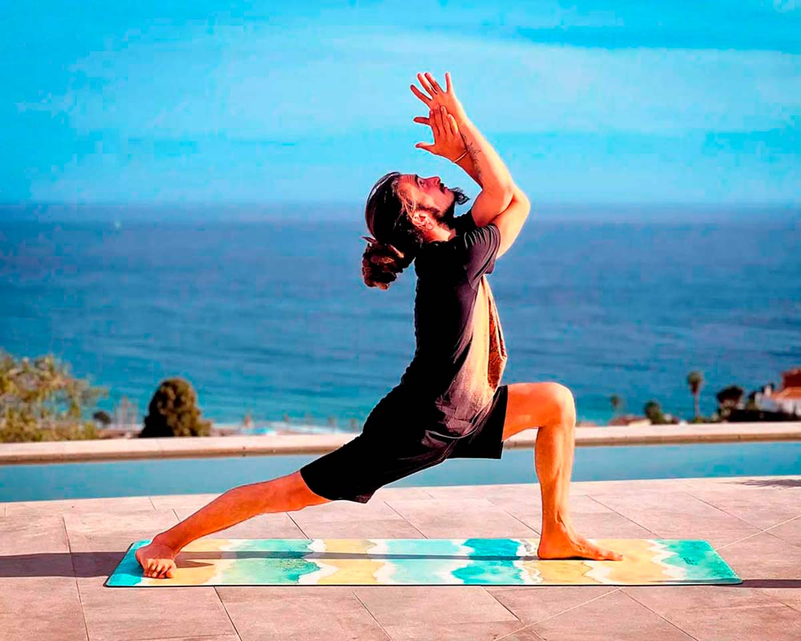

Yoga significa “unión del cuerpo, la mente y el alma”. Tiene su origen en la India
hace más de tres mil años. Su origen son unos textos sagrados llamados Vedas escritos en
sánscrito. Por eso utilizamos palabras en sánscrito para hablar de las posturas.
Esta disciplina llegó a Occidente a finales del siglo XIX, cuando los yoguis indios
empezaron a viajar a Estados Unidos, pero por entonces todavía poca gente practicaba yoga fuera de
la India. En la década de 1950, los occidentales empezaron a aprender esta disciplina en la India y
volvieron con ese aprendizaje. Gracias a eso, esta práctica empezó a ser conocido en Occidente.

Importancia del Yoga
El yoga es una actividad muy beneficiosa, de gran importancia para la salud que permite
desarrollar las principales facetas físicas como la elasticidad, estabilidad y fuerza.
Por lo tanto, el yoga es la actividad perfecta para acompañar a deportistas para que estos mejoren
sus condiciones físicas o para cualquier otra persona que esté interesada en mejorar su estado
físico y estar en una forma más saludable.
Beneficios
Los beneficios del yoga se notan en el cuerpo, la mente y el alma. Hay muchos yoguis y yoguinis que,
una vez lo prueban, ya no lo dejan. Esto es porque nos ayuda a mejorar la concentración, la postura,
la digestión y la calidad de nuestros pensamientos, entre muchas otras cosas.
Los beneficios del yoga para el cuerpo son muchos. Entre ellos está lograr una
postura saludable para aliviar y prevenir los dolores lumbares y cervicales. También nos ayuda a
tener un cuerpo más flexible, unos músculos y huesos más fuertes, un sistema inmunológico
sano para prevenir enfermedades y por supuesto las prácticas más activas nos ayudan a
quemar calorías.
Además, en yoga es muy importante la respiración, que se practica en las asanas, en pranayama y en
meditación. Cuando nuestra respiración es fluida, estamos de mejor humor.
Los beneficios para la mente también son muchos. Reduce el estrés y la ansiedad, nos ayuda a
relajarnos y a dormir mejor, a concentrarnos y a ganar confianza en nosotros mismos.
Tipos de Yoga
Hay más de veinte estilos de yoga o métodos físicos. Aquí te cuento con detalle los tipos de yoga
para que elijas el mejor para ti.
Lo más importante es que distingas entre los dos grandes tipos de yoga: el tranquilo y el dinámico.
Vinyasa Flow Yoga
Vinyasa Flow es un de yoga dinámico donde se practican las asanas en secuencias fluidas al
ritmo de la respiración, con la mente focalizada en puntos claves del cuerpo y la
energía. Es una práctica intensa que integra los principios fundamentales de los siguientes tipos de
yoga: Iyengar: precisión, alineación ,seguridad y sutileza, Ashtanga: continuidad e intensidad,
fortaleciendo y dando elasticidad al cuerpo fÌsico y Hatha Yoga: concentración e internalización.
En el mundo del yoga es difícil construir una trazabilidad histórica fiable. Nacido en una tradición
eminentemente oral a veces no sabemos si lo que vemos y nos cuentan está basado en la rigurosidad o
en la interpretación subjetiva. Como estilo de yoga, el vinyasa puede estar sujeto a la falta de
rigurosidad que tienen otros estilos “tradicionales” de yoga. Sin embargo, el término Vinyasa
aparece en un texto, ya desaparecido, llamado Yoga Korunta, atribuido al sabio Vamana Rishi. Dicho
texto fue la base de las enseñanzas que Krishnamacharya, el padre del yoga actual tal y como lo
conocemos, recibió durante siete años de su gurú Ramamohan Bramachari y que posteriormente el mismo
Krishnamacharya enseñó a sus discípulos (BKS Iyengar y Sri K Pattabhi Jois entre otros) . Este texto
enseñaba un hatha yoga vigoroso basado en vinyasas, bandhas (cierres energéticos) y drishtis
(mirada).
Las secuencias de asanas que se crean en una clase de vinyasa yoga constituyen un excelente medio
para explorar la sucesión de momentos producidos en una situación consciente que logramos a través
de focalizar la atención en la unión de movimiento y respiración. Así pues, vinyasa puede ser una
forma de yoga, pero también es el proceso consciente que ocurre de forma natural cuando ordenamos
las circunstancias de forma adecuada.
La mayoría de las veces, en nuestro intento de alcanzar un estado meditativo o concentrar la mente
en un punto, de forma espontánea empiezan a surgir fuerzas contrapuestas que impiden tal fin.
proceso de vinyasa permite pues que dichas fuerzas, contextos y perspectivas contrapuestas
surjan, y en el momento justo, antes de que una narrativa empiece a iniciarse o divaguemos,
introducir de forma consciente un elemento que equilibre y retome la dirección.
El ejemplo más obvio de vinyasa es el movimiento de inhalación y exhalación. Fuerzas opuestas de
ascenso y descenso, de activación y relajación, de expansión y contracción. Cuando observamos de
forma detenida este proceso, ambos patrones permanecen presentes de forma consciente en nuestro
sistema nervioso y en nuestra conciencia, siendo testigos de la paradoja de la contradicción. Con
práctica, la mente encuentra la calma a través de la observación consciente de la aparición de
fuerzas opuestas.
Aprendemos a estar concentrados y conscientes mientras soltamos cualquier expectativa de lograr un
resultado concreto , rindiendo las demandas del ego al tiempo que calmamos la mente, todo siendo
conscientes de la complejidad de lo que sea que acontece. Cultivando una mente abierta,
inquisitiva y de aceptación en la controlada estructura de la práctica, el encuentro
con las diferentes paradojas y lo desconocido empiezan a sentirse cómodos e interesantes en lugar de
amenazantes. De forma gradual, los habituales patrones de comportamiento y pensamiento preconcebidos
se disuelven y , de esta forma, nos hacemos más libres de los condicionamientos impuestos por la
mente.
En la práctica de vinyasa yoga el cuerpo y la respiración son el vehículo y la herramienta de acceso
a estados más profundos de autoconocimiento y conciencia. La práctica física dinámica ayuda
a depurar el organismo, a crear ligereza y a evitar el estancamiento, tanto físico como
mental ayudándonos así adquirir una visión interna y externa clara y ecuánime.
Hatha Yoga Dinámico
Orientado hacia aquellos que prefieren clases más tranquilas, pero no por ello menos
intensas. Este estilo se basa en la práctica de asanas (posturas de yoga) que aportan a
los músculos firmeza y elasticidad, acompañados siempre de la respiración y la concentración que nos
lleva a nuestro objetivo de equilibrar cuerpo, mente y alma.
El Hatha Yoga Dinámico abre innumerables posibilidades y se caracteriza en que se adapta a
cada alumno y circunstancia. Se enseña a los alumnos que puedan vivenciar sus prácticas en
estado de cambio y adaptabilidad dinámico, permitiendo la creatividad e improvisación
durante el transcurso de clase a clase, generando una práctica variada y constantemente renovada día
a día.
Tomamos en cuenta a la hora de crear y enseñar esta tecnica de Yoga, que la misma debe adaptarse a
cada practicante y grupo de personas, para su beneficio y transformacion personal. Rutinas y
sistemas rigidos de yoga, no son compatibles con el hombre moderno de Occidente y generan confusion
sobre este proceso de transformacion personal. Por eso la sensibilidad y observacion de los
profesores que enseñan en nuestra escuela es de vital importancia.
Biomecánica y alineación
Biomecánica es un tipo de yoga en el que uno toma conciencia del entendimiento y cuidado del cuerpo:
que músculos y huesos usamos, qué movimientos estamos haciendo. Es una clase intensa donde ahondamos
en los detalles mas sutiles.
La Biomecánica es la ciencia que estudia el movimiento y los cambios de posición del cuerpo
realizando un análisis funcional y estructural del sistema músculo-esquelético y
articular, además de observar los factores biológicos y mecánicos que afectan al
movimiento humano.
La alineación enfocada en el estudio biomecánico de cada persona nos permite darle las instrucciones
adecuadas según sus necesidades físicas, de esta manera se ayuda al alumno/a a sacar el mayor
partido no solo físico sino también mental, ya que conectará mejor con su cuerpo al respetarlo y no
empujarlo a conseguir una postura idealizada.
Al aplicar el conocimiento biomecánico a la práctica de Yoga, hemos de tener en cuenta su
propósito en la experiencia global del alumno y valorar cuándo no es necesario complicar en
exceso la experiencia por intentar “perfeccionar” la postura.
Uno de los aspectos más peculiares de la práctica física del Yoga (asana) es que en los distintos
estilos que encontramos, se plantean distintas formas de alinear o colocar el cuerpo en las posturas
que realizamos en una clase.
Kundalini
Es una clase con mucho recorrido interior , de asanas y parte de meditación que te lleva a
los mas profundo y sutil del ser.
Apta para todos!
“La belleza de Kundalini Yoga es que si un set es practicado de A a Z por más o menos de tres
minutos, te revigoriza todo tu sistema. Te trae toda la energía y el balance de prana y apana.
22 formas de yoga y todas ellas apuntan a una cosa: elevar la Kundalini . El
propósito de elevar la Kundalini no es que comencemos a volar en el aire y todo eso. Cuando
la Kundalini se eleva, la persona se vuelve súper alerta a todo. Uno se vuelve un ser humano
sabio en cada campo de la vida que toquemos. Es para el mantenedor del hogar. Nos
permite casarnos y tener hijos. Puedes tomarte las presiones de la vida absolutamente bien, y
mantenerte joven, hermoso, sano, y capaz de seguir andando. Ese es el propósito… Es una experiencia
de vida que se construye día a día. Con todos nuestros errores y todas nuestras debilidades, todavía
podemos volvernos sanos, felices y sagrados. Ese es el propósito.” Yogui Bhajan
Hatha con elementos
Las clases de Hatha con elementos q apuntan a secuencias simples donde hacemos hincapié en la
correcta alineación del cuerpo en cada postura
, considerando los fundamentos de la biomecánica. Ayudándonos con elementos adaptamos las
posturas a las posibilidades de cada unx para avanzar en la práctica de forma segura. Apta para
todos!
Yoga para principiantes
El nivel de yoga no tienen que ver tanto con estar en forma, sino con tu conciencia corporal y el
tiempo que llevas practicando. Eres un yogui principiante si:
Acabas de empezar en la práctica, llevas unos meses practicando yoga con constancia y hace años que
practicas yoga, pero de forma esporádica.
Tomamos una clase
Rellena el formulario y te enviaremos el calendario de 5 clases exclusivas